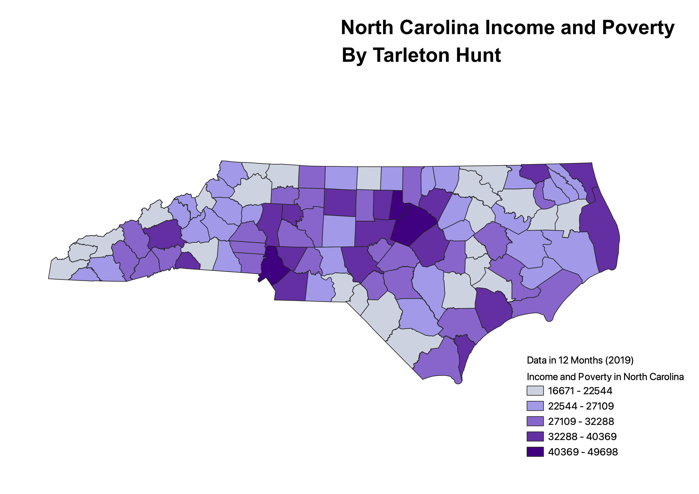

Intro to Geographic Info (GEOG 370) Course Projects
Homework 6: Census Data Choropleth
Tarleton Hunt
This map describes the income and poverty levels in North Carolina. It shows the total housing units in each county in North Carolina in the past 12 months on the year 2019.

Data used for this project:
Clean CSV dataset
Link to GeoJson